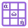
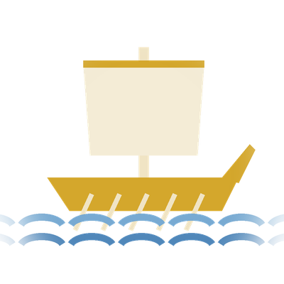

Πλοῖον
Text provided by Perseus Digital Library, with funding from The Annenberg CPB/Project. Original version available for viewing and download at http://www.perseus.tufts.edu/hopper/.
· Privacidade · Privacy
 PloionPloion
PloionPloion